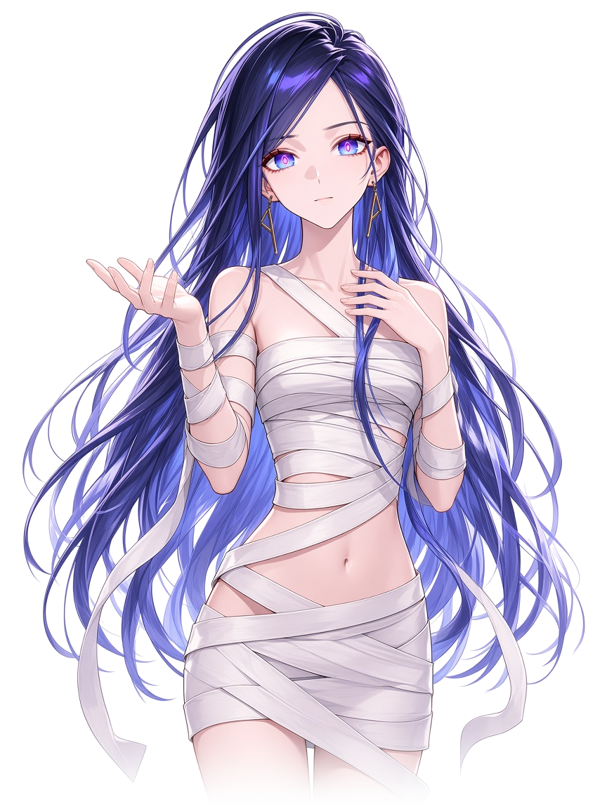
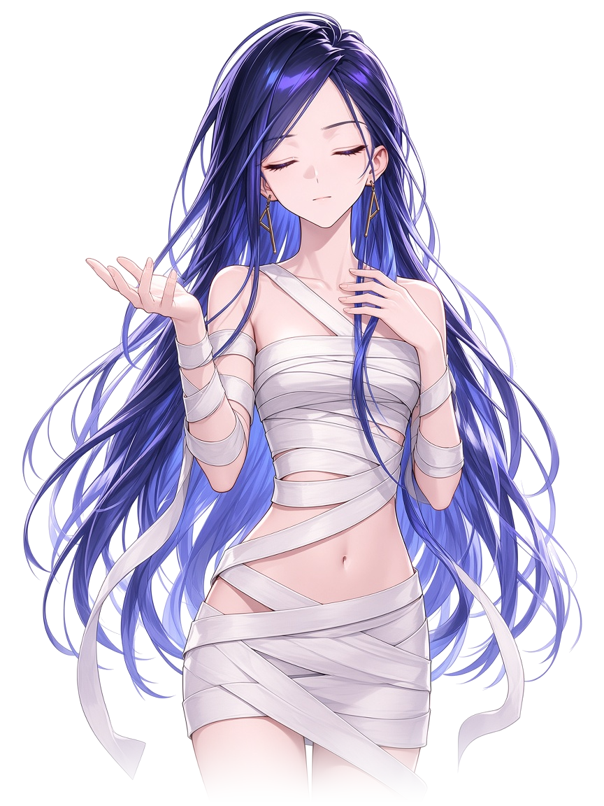
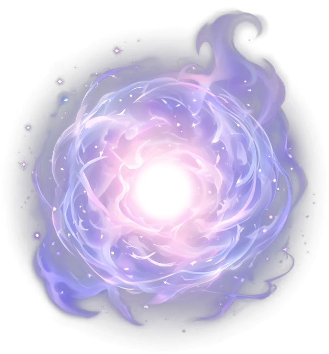

旅人
本地档案
Lv.
1
公告
好友
计划
活动
补给



探索行动
EXPEDITION
故事线 · 循环与终结
00
/
10
已阅故事
同行者
COMPANIONS
角色养成
编队
FORMATION
出战成员 4 / 4
全域检索
GLOBAL SEARCH
特殊行动
SPECIAL OPERATION
红潮干涉
档案
ARCHIVES
仓库
DEPOT
×
请启用 JavaScript 进入大厅。
阅读世界档案